Each of the models available on the Project page has a number of model-specific limits and settings that can be adjusted to influence the resulting fits. In addition, all three models allow you to set conditions on prevalence, i.e., the prevalence is above or below a certain level in a given year. This page discusses the options available for each model and what they do. Before reading it, we strongly recommend you first read carefully the section entitled “Behind the scenes: what really happens when you click Fit?” on the Project page help, which informs this discussion.
Because the limits and settings vary by model, you will see three different displays depending on which model you have selected when you click the Advanced Options button in the lower left of the Project page. The following are the three possibilities:
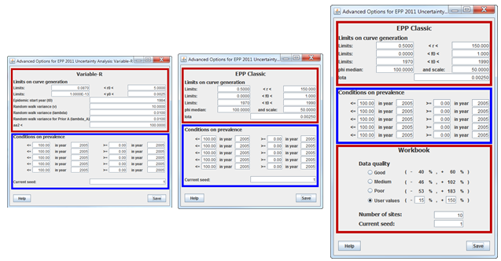
Each of these displays has one or more model specific limits and settings areas, highlighted by the red boxes above. In addition, each of them has a section labeled “Conditions on prevalence”, which applies user defined prevalence criteria to the curves being selected.
There are situations in which certain curves are mathematically acceptable, i.e., they fit the data reasonably well, but they are unrealistic given our knowledge of HIV epidemics. Prevalence conditions allow you to remove these curves from the final set generated by EPP. Any curve which does not match all the prevalence conditions provided will be eliminated from the sample by setting its likelihood to zero. You should apply this cautiously and only if you have a clear understanding of the current state of your epidemic and data to support your choice. If you apply conditions that remove curves that are actually possible in your country, you may misinterpret the state of your epidemic and provide incorrect information for programmatic purposes.
Take for example the data set in the figure below. Because the surveillance data started well into the epidemic and is relatively flat, there is a set of earlier curves, circled by the red oval, that represent early and very rapidly rising epidemics. They do “fit” the data with enough accuracy that they are kept by EPP. However, given our knowledge of the epidemic in the country, these are not possible – they would have produced a substantial early AIDS caseload by the mid-1980s, which was not observed. In addition, they are clearly affecting our uncertainty bounds. Notice how the uncertainty bounds between 1980 and 1990 are close to 3%. The more realistic scenario is that shown by the best fit curve and the bounds from 1995 forward.
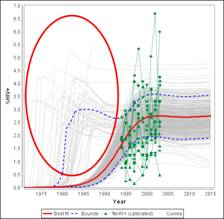
Prevalence conditions are intended to deal with exactly these types of problems. By setting a constraint, for example, prevalence in 1988 must be below 1%, we can eliminate most of these earlier unrealistic curves. This is done under the heading “Conditions on prevalence” on the Advanced Options page. When you first open Advanced Options, the prevalence conditions will appear as:
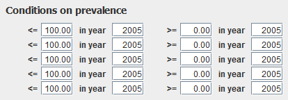
There are five upper limits on prevalence and five lower limits on prevalence. By default, the upper limits are set at 100%, and the lower limits are set at 0%. This means that you initially start with no conditions on prevalence, since all curves are between 0% and 100%. If we apply a condition by modifying the condition on the first line to select only curves with prevalence less than or equal to 1% in 1988, any curves with prevalence above this level will be removed during the fitting process. That is, they will be given zero likelihood so they will never be selected when we pick out our final curves.
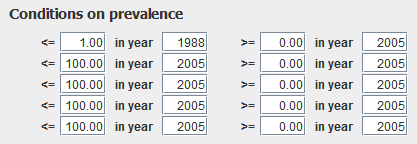
This removes the unrealistic earlier epidemic curves and produces the much cleaner picture shown below – much more in line with our knowledge of the local epidemic,
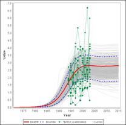
Another situation that sometimes arises is that we primarily have data on the decline of an epidemic, but only limited information about its early history. Consider for example the fit shown below for a sub-population of people who inject drugs. Virtually all of the surveillance data is available post-peak. If you fit this data with EPP with no prevalence conditions, you would get the figure shown in red, which is an epidemic peaking in 2002 at about 35%. However, there is data from ad hoc studies in country that indicates that prevalence among injecting drug users was almost 50% in 1995. However, because this is not part of the surveillance system, it is not included in the data set shown here.
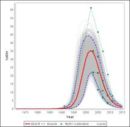
How might we apply this earlier information to improve the fit? Prevalence conditions offer one possibility. In this case use a low prevalence condition. Apply a condition that the prevalence in 1995 must be above 40% and then refit.
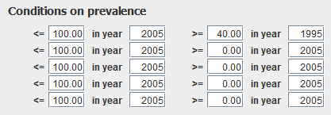
Now you will get an epidemic that goes high earlier, but which still fits the data available. In sparse data conditions, when the amount of surveillance data is limited, prevalence conditions based on several high quality ad hoc studies may be very helpful in selecting an epidemic that is consistent with the different sources of information available.
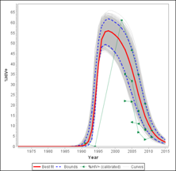
A final situation that often arises in concentrated epidemics is having an extremely sparse set of data for an important sub-population, for example, men who have sex with men. In many countries data has only been recently collected on this sub-population, showing epidemics rapidly on the rise. However, often we only have two or three data points in our trend, technically not enough to get a good mathematical fit with EPP. Given the rapid rise in the MSM component of the epidemic we do not want to leave them out of the national projection.
However, when we set our limited data set, we find that it does not constrain the epidemic very much, allowing anything from 2% to 65% prevalence in 2015 as shown below. This should not be that surprising; there is considerable uncertainty associated with such a small collection of data points. However, does this mean that your epidemic among MSM may rise to 65%? Probably not. That has not been observed in any setting so far.
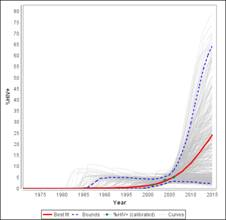
So what do you do? First, look around for data among MSM from nearby countries or regionally. What do their prevalence trends look like? What are the levels at which prevalence among MSM stabilizes? Let's suppose that we find that in most nearby countries HIV prevalence among MSM seems to be stabilizing below 10%. We could apply this as an upper prevalence limit on MSM prevalence in 2015. In addition, the graph shown above has some early curves that rise to 5% several years before 2000 that we know are not realistic since few MSM were found among AIDS patients in the early years of the epidemic. So let's apply two prevalence conditions: prevalence in 1998 must be less than 1% and prevalence in 2015 has to be less than 10%, i.e., below the stabilization level seen in surrounding countries. Save the changes and refit your epidemic. This produces an epidemic that stabilizes below 10%. Keep in mind that when you start to constrain epidemics which have a natural wide uncertainty, you are imposing your beliefs on what is reasonable in your country and your uncertainty estimates may be too narrow. This requires that you be open and transparent about the assumptions being made, so that others can review your conclusions and judge the validity of the results with full information about the decisions made in fitting.
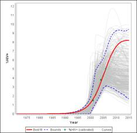
WARNING: to understand the next three sections, the user must first read the section on how fits are done behind the scenes on the Project page. If you do not understand that section, this discussion will make little sense.
Now let's turn to discussion of the options related to each model. Recall that EPP works by randomly generating a set of curves based on the model chosen. The Advanced Options for each model determine what that set of curves looks like. For EPP Classic each curve is based upon a randomly chosen combination of (r, f0, t0 and Φ). The limits on curve generation, highlighted in the red box below, determine the possible range of each of these parameters. For example, the r limits by default are that 0.5 < r < 150.0, that is the r for random curves is chosen as a value between 0.5 and 150. Similarly for f0 and t0..The Φ parameter is slightly different in that it is chosen from a bell-shaped curve around the median value specified as “phi median” with a spread given by “scale”. A higher value of spread means the possible values are more widely distributed around the median.
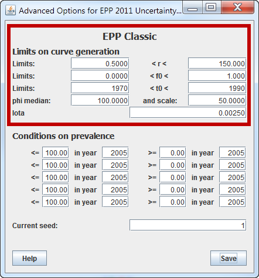
In most cases, the average user will only change the values for t0, because he or she might have better local information about the possible range of start years for their national epidemic. By default the start years are chosen between 1970 and 1990. However, in some countries with concentrated epidemics later start years, e.g., 1985 to 2005 may be more appropriate. If you do change this be sure to cover the full range of possible start years in your country. There is no harm in estimating a wider range, as EPP will still pick the start year for the best fit curve based on fitting the data. However, if you estimate to narrow a range, you may force the epidemic to grow too rapidly or too slowly and it may not truly reflect your national situation. The entry labeled Iota is beyond the scope of this help and should only be changed on consultation with UNAIDS in extremely low prevalence settings.
The Advanced Options for the Variable-r model are shown in the red box below. The value r0 refers to the initial value of r in the start year (t0 below) and the y0 refers to the initial pulse of HIV infection that starts the epidemic. The random walk variance v, lambda and lambda_A determine the size of the allowed changes in r in each year. In practice, lambda helps to determine the smoothness of the incidence curve. A higher value of lambda, e.g., 0.09, will result in less smooth incidence curves, but an easier time finding a fit. Too low a value of lambda, e.g., 0.001, will result in curves that are very smooth, but which probably don't go through your data. There is a trade-off between how smooth the incidence curve is and the quality of the fit to the data. In general, we recommend you remain with the defaults. If you choose values that are far removed from these defaults, you will not be able to find any curves that fit your data. The final entry “aa2” is yet another smoothing constraint, which removes curves that change to rapidly. However, you should not try to change it without guidance from UNAIDS.
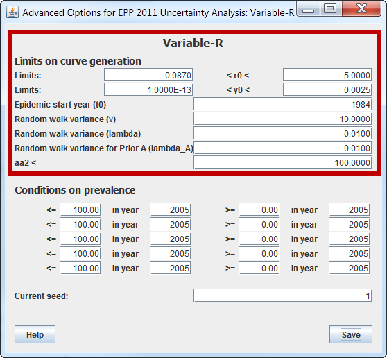
There are two sections to the Advanced Options for the Workbook model. The first section at the top of the display is identical to that for the EPP Classic model described earlier. This is because the Workbook model is built upon EPP Classic.
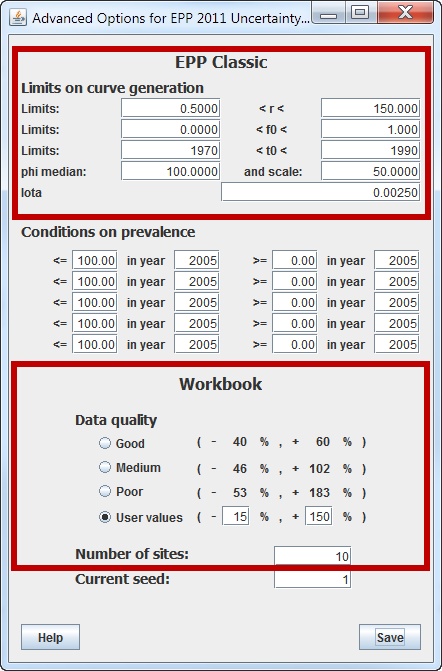
The lower display has two entries: data quality and number of sites. The Workbook model is intended to fit a single data trend, obtained from a series of UNAIDS Workbooks for different years. It is hard to estimate uncertainty for this single series. So the Workbook model generates a series of sites by generating a set of trends equal to the number of sites specified. Each trend is generated by randomly varying each of your annual data points by the positive and negative percentage range specified under Data quality. That is, if one of your annual numbers is 2% and you have chosen “good” data quality, a randomly chosen number between 1.2% (down 40%) and 3.2% (up 60%) will be used for that year in the generated trends. The model then fits these artificially generated sites to estimate the overall uncertainty in your Workbook fit. These data quality values have been derived by the UNAIDS Reference Group from a careful review of a large number of UNAIDS Workbooks and assessments of the quality of the data going into them. If you increase the number of sites, you fits will take longer as the likelihood calculations increase in complexity.
Before closing, we should introduce you to one final feature: the current seed entry. Each of the Advanced Options displays contains a field labeled “Current seed”. By default, next to it is the number 1. Recall that the fitting approaches in EPP involve random generation of sets of parameters within certain ranges. This makes use of a random number generator. In order to ensure that you get the same results each time you run EPP, this random number generator is set to produce the same string of numbers each time it is run and this string is determined by the seed value. You can change the string of random numbers by changing the seed. This will result in a new best fit and range of uncertainties, which will be similar to, but not exactly the same as when the seed is 1. If you have a lot of data, you should see little difference with different seeds. However, if your data is sparse, the results may vary substantially. In practice, we generally do not recommend that people change the seed as it may make it more difficult for you to compare your results with others using EPP on the same data.
Whenever you use Advanced Options you must exercise extreme caution. Recall that in using these options you are imposing your beliefs on the epidemic fit. If you apply a prevalence condition, you are eliminating some curves that actually do fit your data. That means your prevalence conditions must be evidence-informed and not just made in an ad hoc fashion to manipulate the final shape of the epidemic. When you apply a prevalence condition, be sure to use the Source button on the Project page to document what data you used to inform that prevalence condition. Prevalence condition should not be applied arbitrarily, but only if you have solid information that documents their validity. Similarly, if you change the parameters for one of the models in Advanced Options, again document your reasoning and the evidence that informs your decision. For example, if you change f0 in EPP Classic, the fraction of the sub-population entering the group at risk of HIV, to be between 0.0 and 0.2 provide the data that justifies why less than 20% of the current sub-population is at risk of HIV. If you cannot justify a change in any of these limits and conditions with data from a reliable source, then you shouldn't make the change.